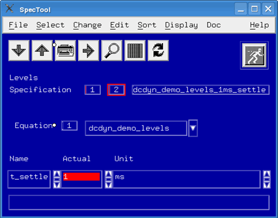

Defining a level equation set for a dynamic DC test
This step of the example configuration defines a level equation set, which specifies the static (set-based) DPS setup to be applied after connecting the power supply. The settling time is programmed via a spec variable.
About this task
Note The static DPS setup is not sequencer‑controlled and thus
independent of any dynamically programmed DPS levels.
Procedures
Levels
The level file defines a level equation set for the power pins Vdd and Vdd2:
...
EQSP LEV,EQN,#nxxxx
EQNSET 1 "dcdyn_demo_levels"
SPECS
t_settle [ms]
EQUATIONS
...
DPSPINS Vdd Vdd2
vout = 0
ilimit = 50
t_ms = t_settle
vout_frc_rng = 7
iout_clamp_rng = 500
offcurr = act
disable_const_curr_check
LEVELSET 1
PINS DigNote Only power pins (DPS) are specified in level equation sets. Signal pins (PMU) get
their definitions from the SPMU_TASK test method API.
Note The static level
programming in the level equation set does not effect the dynamically programmed (sequencer
controlled) levels. This means, if a DPS is for example, dynamically ramped down, you must take
special care that any IO channels may need to be reprogrammed accordingly or disconnected to
avoid potential DUT damages. See also DPS pins with voltage ramps.
Settling time
This example defines the settling time with the
t_settle spec variable to t_settle = 1ms. You define
the value in the SpecTool.

What to do next
Next you must define a timing equation set for the dynamic DC test.
Functional changes
- Introduced before SmarTest 6.3.2